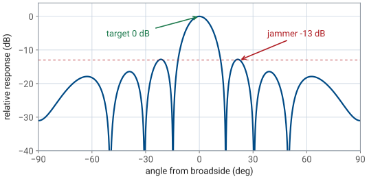
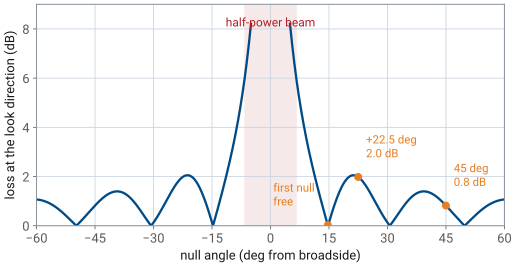
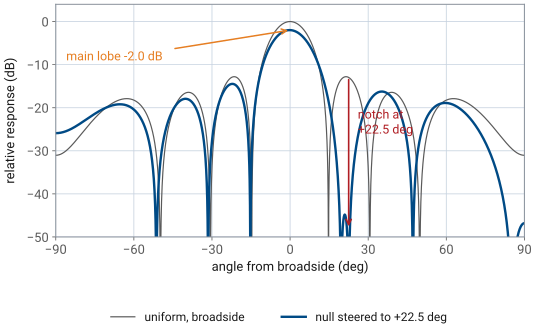
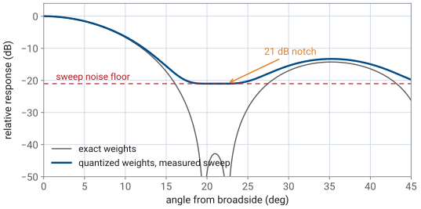

L27 - Null Steering Theory#
Null Steering Theory
Today you break the pattern on purpose.
Lesson 27 · Antennas, Phased Arrays, and Radar Systems · Dr. Neil Rogers
Learning Objectives
- I can explain when a pattern null is worth more than main-lobe gain.
- I can derive the weight-subtraction rule that places a null without moving the main beam.
- I can compute the per-element gains and phases that place a null at a chosen angle on the PHASER.
- I can predict the achievable null depth given phase and gain quantization.
Lesson 26 catalogued the three ways a steered pattern breaks on its own: grating lobes when the elements are too far apart, squint when the frequency moves off the design point, and quantization lobes when the phase shifter runs out of bits. Those were accidents, and the work was to avoid them. Today you break the pattern on purpose. You will place a deep null exactly where an interferer sits, keep the main beam pointed where it was, and lose a known amount of main-lobe gain doing it.
Part 1: When a null is worth more than gain
Every array so far has been judged by its main lobe. Peak gain, beamwidth, and scan loss all describe where the energy goes. That is the right measure when the only thing in the field of view is the target. It is the wrong measure when something else in the field of view is louder than the target.
Consider the PHASER looking at a target on boresight, and a second transmitter at \(+22.5^\circ\) that is 10 dB stronger at the aperture. The array does not reject the interferer because it is off-axis; it rejects it by the pattern level in that direction, and the first sidelobe of a uniform 8-element array is only \(-13\) dB. The interferer therefore arrives at the beamformer output \(10 - 13 = 3\) dB below the target. A 3 dB margin is not a margin. Any fade, any target fluctuation, and the receiver is tracking the wrong signal.
The situation

Two ways out
There are two ways out. You can raise the target’s return by 20 dB, which for a radar means a hundredfold increase in transmit power, a much larger amplifier, and a much brighter signature for anyone listening. Or you can push the pattern level at \(+22.5^\circ\) down by 20 dB, which costs about 2 dB of main-lobe gain and a weight calculation the processor finishes in microseconds. The second option is why every modern radar and electronic-warfare receiver steers nulls.
Anything loud, not just a jammer
Note
The military framing is the obvious one: a jammer deliberately parked in a sidelobe is the reason sidelobe-level specifications exist at all, and null steering is the countermeasure. The physics is the same for a co-channel base station, a radar altimeter on the next aircraft, or a strong multipath reflection off a hangar. Anything loud that is not where you are looking is handled the same way.
The control we have not used yet
To place a null you need control the previous lessons did not use. Lesson 18 steered the beam with phase only, holding every element at full gain. Lesson 24 tapered the sidelobes with amplitude only, holding every element in phase. Null steering uses both at once, so from here on each element carries a complex weight
with \(a_n\) the element’s amplitude setting and \(\phi_n\) its phase setting. On the PHASER, \(a_n\) is the Element Gains slider for that channel and \(\phi_n\) is its Phase Control entry. The two ADAR1000s give you both knobs on all eight elements, which is exactly the degrees of freedom this lesson uses.
Key point
An array is judged by the ratio of what you want to what you do not want. When the interferer is stronger than the target, moving the pattern down at one angle helps more than moving it up at another.
Part 2: Steering vectors are the language
Write the array response the way the elements see the world. A plane wave arriving from angle \(\theta\) reaches element \(n\) a distance \(nd\sin\theta\) earlier than it reaches element 0, so the signal at element \(n\) carries the extra phase \(nkd\sin\theta\). Collect those factors into the steering vector
whose \(n\)-th entry is \(v_n(\theta) = e^{jnkd\sin\theta}\). The steering vector is not a property of the array’s settings. It is a property of the direction, and it says how a wave from that direction is spread in phase across the aperture.
The response is a dot product
The beamformer forms one number from the eight element signals by weighting and summing them, so the array’s response to a wave from \(\theta\) is the dot product
This is the array factor of Lesson 16 with the weights left general. Every pattern in Module 3 is one evaluation of this sum.
Beam steering, rewritten
Now read the beam-steering result of Lesson 18 in this language. To point the beam at \(\theta_0\) you want all \(N\) terms of the sum to add in phase when \(\theta = \theta_0\), which happens when each weight cancels its own steering-vector phase:
The conjugate steering vector is the progressive phase ramp \(\Delta\phi = kd\sin\theta_0\) you have been programming into the ADAR1000s since L19. With \(\mathbf{w}_\text{d}\) applied, \(y(\theta_0) = N\) — every element contributes a unit phasor pointing the same way — and that is the peak of the pattern.
Two conventions, both course-wide
Note
Two conventions matter and both are course-wide. Angles \(\theta\) are measured from broadside, and the weight that steers to \(\theta_0\) carries \(e^{-jnkd\sin\theta_0}\), the negative of the arrival phase. Getting the sign backwards puts the beam, or the null, at \(-\theta_0\). On the PHASER that shows up as a notch on the wrong side of the sweep, which is the most common error in the L28 lab.
Part 3: Deriving the weight-subtraction rule
Here is the problem stated exactly. You have the beam-steering weights \(\mathbf{w}_\text{d} = \mathbf{v}^{*}(\theta_0)\), and you want a new weight vector \(\mathbf{w}\) that satisfies two conditions at once:
the response at the interferer angle is zero, \(\mathbf{w}^{T}\mathbf{v}(\theta_1) = 0\);
\(\mathbf{w}\) stays as close to \(\mathbf{w}_\text{d}\) as possible, so the main beam does not move and does not lose more gain than it must.
The first condition is one complex equation in eight complex unknowns, so there are many solutions. The second condition picks one.
Step 1 — build the beam that points at the interferer
Define the second steering weight vector exactly as you defined the first, but aimed at \(\theta_1\):
Applied on its own, \(\mathbf{w}_\text{n}\) would point a full-gain beam straight at the interferer. That is the opposite of what you want, and it is exactly the tool you need.
Step 2 — subtract some of it
Try a weight vector of the form
with one complex number \(r_\text{n}\) still to be chosen. Any \(r_\text{n}\) leaves the main beam roughly in place, because you are subtracting a small multiple of a vector that points somewhere else. One particular \(r_\text{n}\) makes the response at \(\theta_1\) vanish.
Step 3 — evaluate the response at the interferer
Substitute the trial weights into the response and use the dot product:
The second term is easy: \(\mathbf{w}_\text{n}\) was built to cancel the steering-vector phase at \(\theta_1\), so \(\mathbf{w}_\text{n}^{T}\mathbf{v}(\theta_1) = N\). Written with the conjugate transpose, \(N = \mathbf{w}_\text{n}^{H}\mathbf{w}_\text{n}\), since every entry of \(\mathbf{w}_\text{n}\) has unit magnitude. The first term is the desired beam’s own response toward the interferer, and the same conjugate bookkeeping turns it into \(\mathbf{w}_\text{d}^{T}\mathbf{v}(\theta_1) = \mathbf{w}_\text{n}^{H}\mathbf{w}_\text{d}\).
Step 4 — solve for r_n
Setting \(y(\theta_1) = 0\) gives \(\mathbf{w}_\text{n}^{H}\mathbf{w}_\text{d} - r_\text{n}\mathbf{w}_\text{n}^{H}\mathbf{w}_\text{n} = 0\), so
Step 5 — verify by substitution
Put that \(r_\text{n}\) back in:
The null is exact, not approximate, and it takes one division, with no iteration and no optimizer.
Reading r_n
The ratio \(r_\text{n} = \mathbf{w}_\text{n}^{H}\mathbf{w}_\text{d}/\mathbf{w}_\text{n}^{H}\mathbf{w}_\text{n}\) is a projection: it measures how much of the null-direction beam is already contained in the desired beam. Subtracting \(r_\text{n}\mathbf{w}_\text{n}\) removes precisely that much and no more, which is why the main beam survives.
Reading r_n: it is the pattern you already have
There is a second reading that is more useful at the board. Expand the numerator for a broadside beam, \(\mathbf{w}_\text{d} = [1, 1, \ldots, 1]\):
The projection coefficient is the uniform array’s own normalized pattern evaluated at the null angle. If the interferer sits on a \(-13\) dB sidelobe, then \(\vert r_\text{n}\vert = 0.22\). If it sits in the main lobe, \(\vert r_\text{n}\vert\) approaches 1 and you are subtracting nearly the whole beam. If it happens to sit in one of the array’s natural pattern nulls, \(r_\text{n} = 0\), the rule returns \(\mathbf{w} = \mathbf{w}_\text{d}\) unchanged, and the null was already there for free.
Main-lobe loss versus null angle

The weights ride a circle
Geometrically, each element weight is the number 1 minus a phasor of length \(\vert r_\text{n}\vert\) that rotates by \(kd\sin\theta_1\) from element to element. The eight weight tips ride on a circle of radius \(\vert r_\text{n}\vert\) centered on the original weight, so the amplitudes spread between \(1 - \vert r_\text{n}\vert\) and \(1 + \vert r_\text{n}\vert\) and the phases wobble a few degrees either side of the ramp. A null is a small, structured perturbation of the beam you already had.
Part 4: The PHASER example, end to end
Take the course array — eight elements, \(d = 14\ \text{mm}\), HB100 source at \(10.525\ \text{GHz}\), so \(\lambda = 28.5\ \text{mm}\) and \(d/\lambda = 0.491\). Point the beam at broadside and null an interferer at \(\theta_1 = +22.5^\circ\).
Worked example — null at +22.5° from a broadside beam
Element-to-element phase at the null angle. With \(kd = 2\pi(0.491) = 3.085\) rad,
Worked example, continued — the projection coefficient
Worked example, continued
Projection coefficient. The beam is broadside, so \(\mathbf{w}_\text{d}\) is all ones and \(r_\text{n}\) is the uniform pattern at \(22.5^\circ\):
That \(-13\) dB is the first sidelobe level of the uniform 8-element array, which is what put the interferer in play in Part 1.
Worked example, continued — the weights
Worked example, continued
Weights. Element by element, \(w_n = 1 - (0.225\ \angle\ 56.7^\circ)\ e^{-jn(67.6^\circ)}\). The magnitudes run from \(1 - 0.225\) to \(1 + 0.225\).
Convert to PHASER settings. The Element Gains sliders are percentages of full scale, so scale the largest weight to 100 % and enter the weight angles as phase offsets:
Worked example, continued — the gain and phase table
Worked example, continued
Element |
1 |
2 |
3 |
4 |
5 |
6 |
7 |
8 |
|---|---|---|---|---|---|---|---|---|
Gain (%) |
75 |
65 |
82 |
100 |
100 |
82 |
65 |
75 |
Phase (deg) |
\(-12.1\) |
\(+3.1\) |
\(+13.0\) |
\(+6.0\) |
\(-6.0\) |
\(-13.0\) |
\(-3.1\) |
\(+12.1\) |
Worked example, continued — the result
Worked example, continued
Result. The response at \(+22.5^\circ\) is exactly zero. The main beam stays at broadside and its peak drops 2.0 dB, of which 0.4 dB is the subtraction itself and the rest is the rescaling that keeps every gain at or below 100 %. The measured cost on the PHASER sweep is 1.8 dB.
Small changes, easy to get wrong
The gains are symmetric and the phases are antisymmetric, which is what a null placed to one side of a broadside beam always produces. Note how small the phase offsets are: the largest is 13 degrees. Null steering is not a large change to the array’s settings, and that is precisely why it is so easy to get wrong by a sign.
Null steering on the 8-element PHASER array
The widget below applies the weight-subtraction rule to the course array and draws the result. Drag the null angle and watch three things: where the notch lands, how the eight element gains and phases redistribute, and how the main-lobe loss pill tracks \(\vert r_\text{n}\vert\) rather than the null angle itself. Then switch the weights from Ideal to PHASER, which rounds every phase to the ADAR1000’s \(2.8125^\circ\) step and every gain to 1 %, and adds the beam sweep’s noise floor 23 dB below the uniform peak — the notch stops being infinite and settles at what the hardware can actually show you.
The result

Part 5: What the null costs, and what limits it
The main-lobe loss is set by \(\vert r_\text{n}\vert\). Before rescaling, the response in the look direction falls from \(N\) to \(N(1 - \vert r_\text{n}\vert^2)\), a loss of \(20\log_{10}(1 - \vert r_\text{n}\vert^2)\) — 0.4 dB for the \(22.5^\circ\) example. Add the rescaling that keeps the largest gain at 100 % and the total loss at \(\theta_0\) comes to 2.0 dB.
The cost climbs as the null moves toward the beam
Walk the null in toward the beam and both terms grow: 2.9 dB at \(\theta_1 = 10^\circ\), 5.6 dB at \(7^\circ\), 8.2 dB at \(5^\circ\). As \(\theta_1\) enters the main lobe \(\vert r_\text{n}\vert \to 1\), the eight weights cancel one another, and what is left after rescaling is a split beam with a hole where the target used to be. A null inside the half-power beamwidth is not a null-steering problem, it is a resolution problem, and the answer is to move the beam or wait for the geometry to change.
Quantization sets a floor on the depth
The weights above are exact real numbers, and the ADAR1000 accepts neither. Each element’s phase lands on a \(2.8125^\circ\) grid and each gain on a 1 % grid, so each weight carries a small error \(\delta w_n\). Those errors are independent, so at the null angle they add in RMS rather than coherently, and the residual response relative to the beam peak is
Halve the bits, lose six decibels of depth
With \(\text{LSB} = 2.8125^\circ = 0.0491\) rad and 1 % gain steps, \(\epsilon_\text{rms} = 0.0145\) and the estimate puts the floor about 46 dB below the peak — the RMS reading of the same result a direct numerical evaluation of the rounded weights gives, which is a residual of about \(-48\) dB at the designed angle. Take \(\approx -48\) dB as the number to quote and this estimate as where it comes from. That is the same \(-6B\) scale as the quantization sidelobes of Lesson 26, a few decibels deeper because the error is spread over eight elements. Halve the bits and the floor rises fast: a 3-bit phase shifter cannot hold a null deeper than about 22 dB.
What you can measure is shallower still
The PHASER’s beam sweep has a noise floor about 23 dB below the uniform-taper peak, and the null-steered main lobe sits 2 dB below that reference, so nothing deeper than roughly 21 dB below the nulled peak can appear on the plot. The verified example measures a \(-21.6\) dBc notch, which is the floor, not the weights. Achievable notch depth on this hardware is 20 to 22 dB, and it is enough: the interferer that was 3 dB below the target in Part 1 ends up more than 10 dB below it.
What the sweep can actually show

More nulls cost more degrees of freedom
An \(N\)-element array has \(N\) complex weights. One is spent holding the main beam, which leaves at most \(N-1\) independent nulls. The PHASER can therefore null up to seven directions at once, though long before that the pattern has been so heavily reshaped that the main lobe is barely recognizable. The procedure generalizes by subtracting one term per interferer and solving the resulting small system; the two-interferer case is the practical limit for an eight-element array.
The weights are static
Every number in this lesson was computed from an angle you had to know in advance. If the interferer moves, the null stays where it was and someone has to recompute and reload eight gains and eight phases. That is the limitation the next lesson confronts.
Key point
\(r_\text{n}\) is the whole story. It is the uniform pattern’s level at the null angle, and it tells you the main-lobe loss before you compute anything.
Summary — the steering vectors and the rule
Symbol / idea |
What it is |
Number to remember |
|---|---|---|
\(\mathbf{v}(\theta)\) |
steering vector, \(v_n = e^{jnkd\sin\theta}\) |
the direction, not the setting |
\(\mathbf{w}_\text{d} = \mathbf{v}^{*}(\theta_0)\) |
beam-steering weights |
the L18 phase ramp, written as a vector |
\(\mathbf{w} = \mathbf{w}_\text{d} - r_\text{n}\mathbf{w}_\text{n}\) |
weight-subtraction rule |
one division, exact null |
Summary — the cost of the null
Symbol / idea |
What it is |
Number to remember |
|---|---|---|
\(r_\text{n} = \mathbf{w}_\text{n}^{H}\mathbf{w}_\text{d} / \mathbf{w}_\text{n}^{H}\mathbf{w}_\text{n}\) |
projection of the null beam on the desired beam |
\(= \) uniform pattern level at \(\theta_1\) |
\(\vert r_\text{n}\vert\) at a \(-13\) dB sidelobe |
cost driver |
\(0.225\) |
Main-lobe loss, null at \(+22.5^\circ\) |
price of the notch |
2.0 dB theory, 1.8 dB measured |
Summary — the PHASER numbers
Symbol / idea |
What it is |
Number to remember |
|---|---|---|
PHASER settings, null at \(+22.5^\circ\) |
gains, then phases |
75, 65, 82, 100, 100, 82, 65, 75 % |
Quantization floor |
\(\epsilon_\text{rms}/\sqrt{N}\), ADAR1000 LSBs |
\(\approx -48\) dB (RMS estimate \(-46\) dB) |
Summary — what limits it
Symbol / idea |
What it is |
Number to remember |
|---|---|---|
Measured notch |
limited by the sweep noise floor |
\(-21.6\) dBc (20 to 22 dB) |
Maximum nulls |
one weight holds the beam |
\(N - 1 = 7\) |
Practice
Where this is going
Lesson 28 takes these weights to the bench. You will compute the gain and phase table for an interferer angle, type it into the Element Gains and Phase Control sections of the Phaser GUI, sweep the beam, and measure the notch you predicted. Then the lab does the thing this lesson cannot: instead of telling the array where the interferer is, it lets the array estimate the interference from the received data itself and compute its own weights. That is MVDR, the minimum-variance distortionless-response beamformer, and it needs the two digital channels rather than the analog element sums — the hybrid architecture of L17 finally earns its keep. Read the Digital Beam Forming section of the GUI inventory before class so the Mode, Snapshots, and Diagonal Load controls are not new to you.
The Module 5 capstone is this lesson at full scale: hold a track on a moving target while a jammer of unknown strength sits somewhere in the sidelobes, and keep both the beam and the null where they belong as the geometry changes.